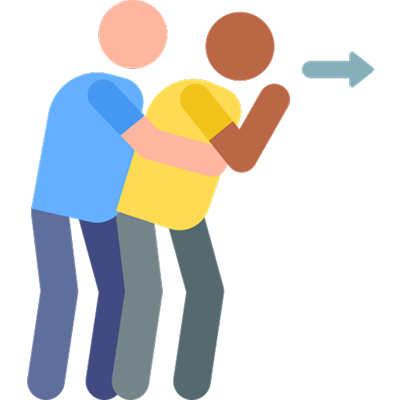

Engasgamento
Passo 1 – Verifique se a pessoa consegue tossir ou falar
Se a pessoa estiver tossindo, falando ou respirando, incentive ela a continuar tossindo com força.

Passo 2 – Se a pessoa não consegue respirar ou falar, inicie manobras
Fique atrás da pessoa, envolva a barriga com os braços e faça compressões fortes para cima, como um empurrão seco.
Passo 3 – Para crianças maiores de 1 ano, siga o mesmo procedimento
As mesmas compressões abdominais podem ser feitas com cuidado, adaptando a força.
Passo 4 – Para bebês (menores de 1 ano)
Dê 5 tapas nas costas, entre as escápulas, e depois 5 compressões no peito, usando 2 dedos.
Passo 5 – Após a desobstrução, avalie o estado da pessoa
Se a pessoa recuperou a respiração, mantenha-a sentada e observando. Mesmo que melhore, é importante ir ao hospital.